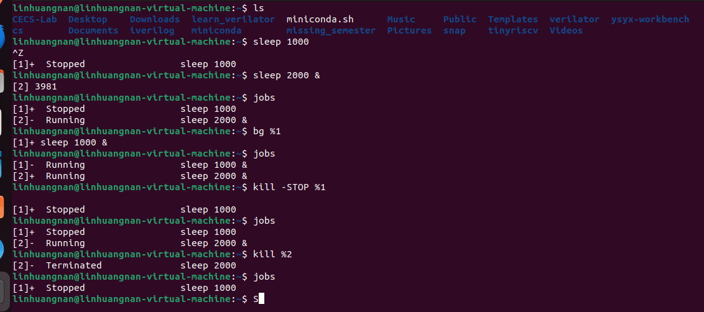
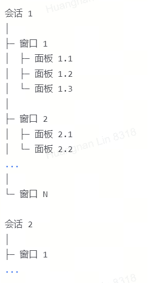

命令行环境¶
- Version
- huangnan.lin
- 2023-12-15
- learning command line environment
- review
Info
- 同时执行多个不同的进程并追踪它们的状态
- 停止或暂停某个进程以及如何使进程在后台运行
- 改善 shell 及其他工具的工作流的方法
任务控制¶
某些情况下我们需要中断正在执行的任务，比如当一个命令需要执行很长时间才能完成时（假设我们在使用 find 搜索一个非常大的目录结构）。大多数情况下，可以使用 Ctrl-C 来停止命令的执行。
结束进程¶
shell 会使用 UNIX 提供的信号机制执行进程间通信。
- 当一个进程接收到信号时，它会停止执行、处理该信号并基于信号传递的信息来改变其执行。因此信号可以看成是一种软件中断。
- 当输入
Ctrl-C时，shell 会发送一个SIGINT 信号到进程。
下面的程序捕获信号SIGINT，忽略它的基本操作，它并不会让程序停止。为了停止这个程序，需要使用SIGQUIT信号，通过输入Ctrl-\可以发送该信号。
Example
#!/usr/bin/env python
import signal, time
def handler(signum, time):
print("\nI got a SIGINT, but I am not stopping")
signal.signal(signal.SIGINT, handler)
i = 0
while True:
time.sleep(.1)
print("\r{}".format(i), end="")
i += 1
程序执行结果
$ python sigint.py
24^C
I got a SIGINT, but I am not stopping
26^C
I got a SIGINT, but I am not stopping
30^\[1] 39913 quit python sigint.pyƒ
SIGTERM 是一个更加通用的、也更加优雅地退出信号。使用 kill 命令可以发出这个信号, 语法是： kill -TERM PID
暂停和后台执行进程¶
信号可以让进程做其他的事情，而不仅仅是终止它们。
例如，SIGSTOP 会让进程暂停。在终端中，键入 Ctrl-Z 会让 shell 发送 SIGTSTP 信号，SIGTSTP是 Terminal Stop 的缩写。
一些命令
fg
fg会将一个暂停（或后台）的工作恢复到前台执行。- 当执行
fg，如果有多个作业，shell 通常会将最近的一个作业带回前台。 - 也可以通过指定作业号（如 fg %1）来选择特定的作业恢复到前台
bg
bg会将一个暂停的工作放到后台继续执行，但不会占据命令行界面。- 该作业会在后台异步运行，用户可以继续在当前 shell 进行其他操作。
- 可以通过作业号（如 bg %1）来指明要恢复的特定后台作业。
jobs
- 这个命令会列出当前 shell 会话中的所有作业以及它们的状态。一个“作业”可以是一个单独的进程或一组进程。每个作业都有一个编号，前面通常带有一个 % 字符。
- 可以通过作业编号来引用后台作业，在 jobs 列表输出中每个作业前都会有一个编号，你可以使用 % job_number 的形式与 fg 或 bg 命令结合使用，来控制这些作业。
一些参数
&后缀可以让命令在直接在后台运行，这使得可以直接在 shell 中继续做其他操作$!如果要选择最近的一个任务，可以使用$!这一特殊参数。
例子如下

终端多路复用¶
使用命令行时，通常会希望同时执行多个任务。举例来说，想同时运行编辑器，并在终端的另外一侧执行程序。
像 tmux 这类的终端多路复用器可以允许基于面板和标签分割出多个终端窗口，这样就可以同时与多个 shell 会话进行交互。
终端多路复用使可以分离当前终端会话并在将来重新连接。
tmux是一个终端复用器，它允许用户在一个终端窗口中管理多个会话，每个会话都可以包含多个窗口，而每个窗口又可以被划分为多个面板。这里是它们之间的关系：
Note
会话 (Session) 会话是tmux中的顶级组织单位。每个tmux会话都是独立的，拥有自己的一组窗口和状态。可以在不同的会话之间切换，或者断开其连接后在另一个地方重新连接。
窗口 (Window) 窗口存在于会话中，类似于图形界面中的应用程序窗口。在一个会话中，可以创建多个窗口，每个窗口都是全屏的，并且拥有自己的终端环境。用户可以在同一会话的不同窗口之间切换。
面板 (Pane) 面板是窗口内部的进一步分割，可以将单个窗口划分为多个较小的区域。每个面板都是一个独立的终端接口。这样，你可以在一个窗口内同时查看和操作多个终端会话。
Tip

creating session¶
tmux new -s [session name]
creating windows¶
-
创建新窗口：
Ctrl-b c -
切换到下一个窗口：
Ctrl-b n -
切换到上一个窗口：
Ctrl-b p -
切换到特定编号的窗口（例如0号窗口）：
Ctrl-b 0
creating panes¶
-
在当前窗口内水平分割出一个新的面板：
Ctrl-b % -
在当前窗口内垂直分割出一个新的面板：
Ctrl-b " -
在面板间切换：
Ctrl-b o -
关闭当前面板：在该面板内按下
exit或者Ctrl-d
Attaching and detaching¶
-
detach(session分离):
C-b d -
attach
tmux attach -t [session name]
Listing sessions¶
tmux ls
别名¶
输入一长串包含许多选项的命令会非常麻烦。因此，大多数 shell 都支持设置别名。shell 的别名相当于一个长命令的缩写，shell 会自动将其替换成原本的命令。例如，bash 中的别名语法如下：
alias alias_name="command_to_alias arg1 arg2"
Warning
注意， =两边是没有空格的，因为 alias 是一个 shell 命令，它只接受一个参数。
别名有许多很方便的特性:
# 创建常用命令的缩写
alias ll="ls -lh"
# 能够少输入很多
alias gs="git status"
alias gc="git commit"
alias v="vim"
# 手误打错命令也没关系
alias sl=ls
# 重新定义一些命令行的默认行为
alias mv="mv -i" # -i prompts before overwrite
alias mkdir="mkdir -p" # -p make parent dirs as needed
alias df="df -h" # -h prints human readable format
# 别名可以组合使用
alias la="ls -A"
alias lla="la -l"
# 在忽略某个别名
\ls
# 或者禁用别名
unalias la
# 获取别名的定义
alias ll
# 会打印 ll='ls -lh'
配置文件（Dotfiles）¶
很多程序的配置都是通过纯文本格式的被称作点文件的配置文件来完成的
Note
-
配置文件之所以称为点文件，是因为它们的文件名以 . 开头，例如 ~/.vimrc.
-
也正因为此，它们默认是隐藏文件，ls并不会显示它们。
shell 的配置也是通过这类文件完成的。在启动时，shell 程序会读取很多文件以加载其配置项。
对于 bash来说，在大多数系统下，可以通过编辑 .bashrc 来进行配置。在文件中您可以添加需要在启动时执行的命令，例如上文讲到过的别名，或者是环境变量。
实际上，很多程序都要求在 shell 的配置文件中包含一行类似 export PATH="$PATH:/path/to/program/bin" 的命令，这样才能确保这些程序能够被 shell 找到。
管理配置文件
-
它们应该在它们的文件夹下
-
使用版本控制系统进行管理
-
然后通过脚本将其 符号链接 到需要的地方。
管理配置文件的好处
- 安装简单: 如果登录了一台新的设备，在这台设备上应用您的配置只需要几分钟的时间；
- 可移植性: 工具在任何地方都以相同的配置工作
- 同步: 在一处更新配置文件，可以同步到其他所有地方
- 变更追踪: 您可能要在整个程序员生涯中持续维护这些配置文件，而对于长期项目而言，版本历史是非常重要的
可移植性¶
配置文件的一个常见的痛点是它可能并不能在多种设备上生效。例如，如果您在不同设备上使用的操作系统或者 shell 是不同的，则配置文件是无法生效的。或者，有时仅希望特定的配置只在某些设备上生效。
有一些技巧可以轻松达成这些目的。如果配置文件 if 语句，则您可以借助它针对不同的设备编写不同的配置。例如，您的 shell 可以这样做：
if [[ "$(uname)" == "Linux" ]]; then {do_something}; fi
# 使用和 shell 相关的配置时先检查当前 shell 类型
if [[ "$SHELL" == "zsh" ]]; then {do_something}; fi
# 您也可以针对特定的设备进行配置
if [[ "$(hostname)" == "myServer" ]]; then {do_something}; fi
如果配置文件支持 include 功能，您也可以多加利用。
git的配置示例如下，~/.gitconfig 可以这样编写：
如果配置文件支持 include 功能，也可以多加利用。例如：~/.gitconfig 可以这样编写：
[include]
path = ~/.gitconfig_local
然后我们可以在日常使用的设备上创建配置文件 ~/.gitconfig_local 来包含与该设备相关的特定配置。您甚至应该创建一个单独的代码仓库来管理这些与设备相关的配置。
如果希望在不同的程序之间共享某些配置，该方法也适用。例如，如果您想要在 bash 和 zsh 中同时启用一些别名，您可以把它们写在 .aliases 里，然后在这两个 shell 里应用：
# Test if ~/.aliases exists and source it
if [ -f ~/.aliases ]; then
source ~/.aliases
fi
远端设备¶
对于程序员来说，在日常工作中使用远程服务器已经非常普遍了。
此时就会用到安全 shell（SSH）
连接服务器
ssh linhuangnan@10.9.60.12
执行命令¶
ssh 的一个经常被忽视的特性是它可以直接远程执行命令。 ssh foobar@server ls 可以直接在用foobar的命令下执行 ls 命令。 想要配合管道来使用也可以， ssh foobar@server ls | grep PATTERN 会在本地查询远端 ls 的输出而 ls | ssh foobar@server grep PATTERN 会在远端对本地 ls 输出的结果进行查询。